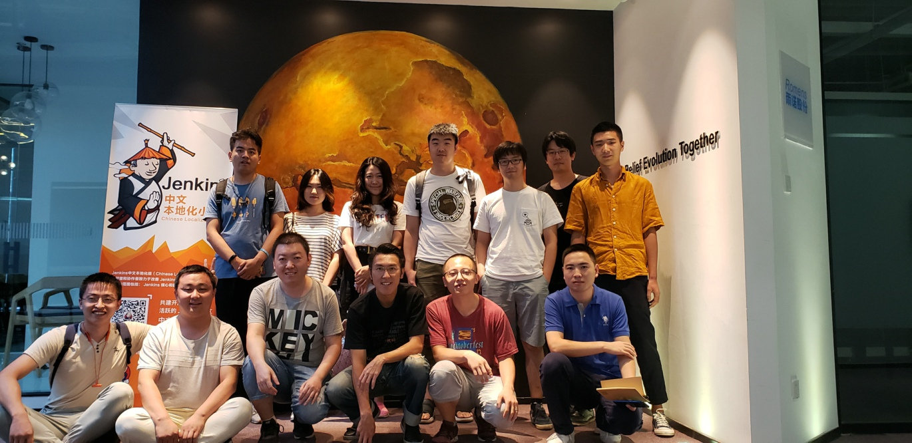
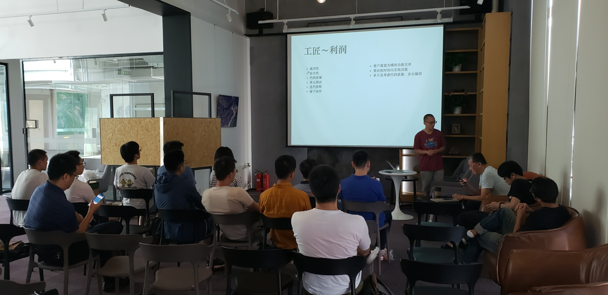
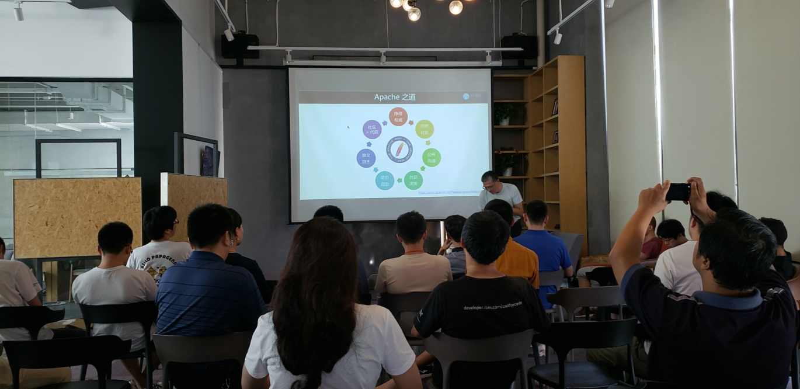
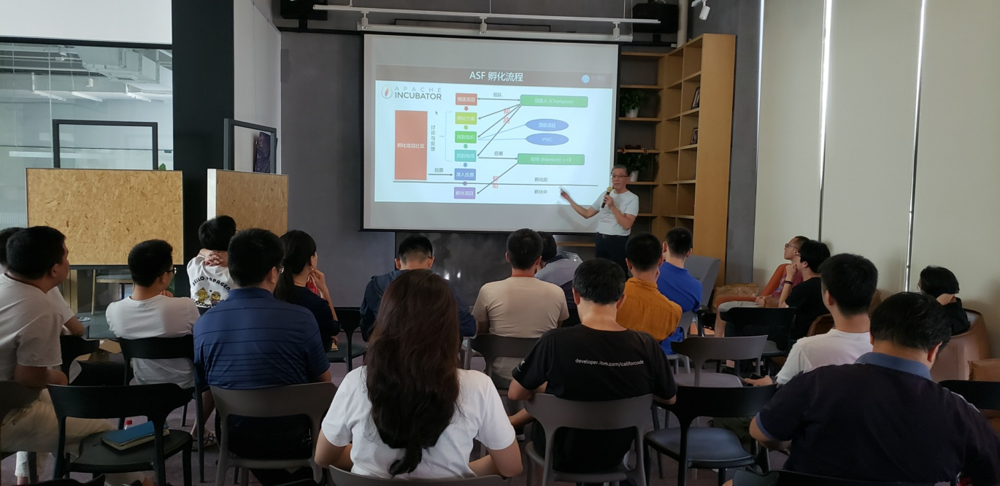
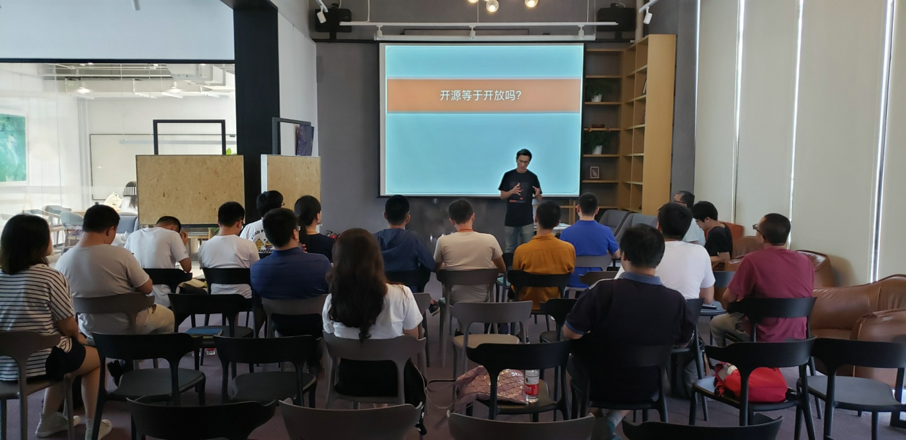
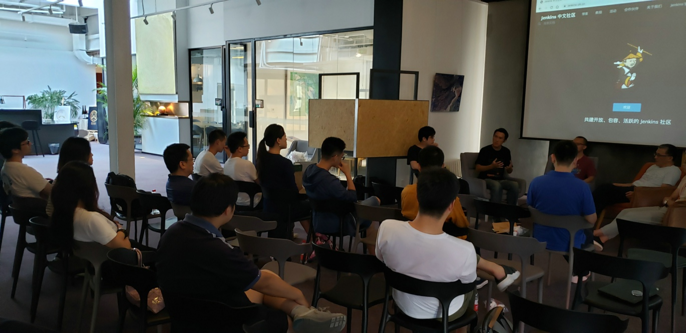

庆祝开源人线下见面会圆满结束

什么是开源精神、为什么以及如何参与开源、开源与个人以及企业之间的关系、开源社区存在的重要意义、996是否与开源背道而驰。
活动介绍
于2019年8月24日（周六）下午2点举办的开源人线下见面会圆满结束啦。本次活动是由Jenkins 中文社区与开源社首次联合主办的一次以社区、开源为主题的活动。
活动主要分为几个部分： * 签到 * 嘉宾演讲 * Panel * 活动复盘
嘉宾介绍
赵晓杰 Jenkins 中文社区发起人
热衷于传播开源理念、开源技术。多年研发经验，目前关注于 DevOps 领域，尤其是持续交付方面。
刘天栋 Ted 开源社理事长暨联合创始人、Apache 软件基金会正式会员
开源社理事长暨联合创始人， Apache 软件基金会正式会员，ASF孵化器项目委员会成员/导师，ASF 筹款委员会成员/赞助伙伴大使，中国信息通信研究院。云计算开源产业联盟.特聘开源治理个人顾问。于2014年10月联合创始开源社。于2018年当选 ASF 正式成员，随后加入 ASF 筹款委员会并成为赞助伙伴大使，2019年成为 ASF 孵化器项目委员会成员，并担任孵化项目（ECharts）导师。 曾历任微软中国战略业务总监、微软开放技术公司及微软亚太研发集团负责开源技术布道及开源社区发展工作；甲骨文(中国)渠道及联盟总监、甲骨文(中国) Linux 战略总监、甲骨文大中华区中间件事业部总经理；Turbolinux 亚太区副总裁等。
慕睿涛 北京卓晟互联网络技术有限公司 CTO
毕业于北京工业大学，2003年加入 Sun Microsystems，负责嵌入式 Java 虚拟机的研发。曾于2008年创建了 PSP 上的JavaME 模拟器项目——PSPKVM，在 PSP 自制软件社区有很高的普及度。目前在北京卓晟互联网络技术有限公司任 CTO ，创建并主持了 JOSH 开源项目，致力于为微小型物联网终端设备提供 Java 应用开发与运行环境。
曹勇华 Chatopera 软件工程师
从事3年软件开发工作，掌握全栈开发技能，熟悉JavaScript、Java和Node.js等。目前在Chatopera从事春松客服，聊天机器人平台。春松客服是帮助中小型企业快速而低成本的获得好用的智能客服系统。
演讲环节
- 赵晓杰分别从
扁平~等级、自由～局限、多样~单一、社区精神等几个层面为我们讲解了他对于开源以及开源社区的理解，很客观地从这几个方面把开源的意义进行了剖析。  刘天栋 Ted为我们讲解了
Apache 之道：从孵化器到顶级项目之路，生动地讲解了 Apache 之道20年如一日的态度持续为公众提供软件以及软件项目社区提供服务和支持。并且讲解了 Apache 如何从一个孵化器逐步成长为全球最大的开源基金会，令在场的听众听的可谓是如痴如醉。  慕睿涛为我们讲解了他在 Sun 公司的一些经历，以及跟开源开始结缘的一些事宜。从
自由软件运动回顾、自由的代价、开放标准与开源代码、Android 与 Java 的纷争、Android 与 Linux 社区的分歧几个方面回顾与分析了开源与开放的本质区别。 
panel 环节
此环节的主题为开源社区的发展和维护，由赵晓杰、刘天栋、慕睿涛、曹勇华等4位嘉宾进行了小组讨论。大家就社区而言比较了国内社区与国外社区环境的差别、从公司与社区等不同角度进行了分析，大家分别发表了自己的一些见解和看法。并且对于国内996的环境因素纷纷发表了自己对一些看法。

活动复盘环节
在复盘环节，现场观众纷纷发表了大家对一些看法，以及对于本次活动对一些态度。据现场观众描述，活动举办还是比较成功的，纷纷表示均有不少收获。 以下是现场观众对本次活动的一些建议： * 活动话题–因为是 Jenkins 中文社区举办，所以大家在潜意识中认为可能会跟 Jenkins 相关，希望可以在活动介绍中把活动主题注明 * 活动议题–在未参加活动前，大家对活动的议题不太了解，希望可以提前获知，并且可以提前将自己的问题准备好，提高效率 * 分享内容不完整–因为时间关系，有些演讲嘉宾的内容没有全部分享完，令现场观众心中会有遗憾 * 互动比较少–在活动中，嘉宾与现场观众的互动较少，提问环节时间较短 * 提前发通知–希望可以在活动开始前几天提前通知。我们是通过邮件通知的，如果能在活动前加到微信群里的话，效果会好一些 * 设置专场–希望可以设置不同专场，大家根据不同的专场参加
结束语
在此，非常感谢京东云、平安云 GitHub、翊翎资本提供对Jenkins 中文社区的大力赞助，同时也感谢开源社与我们一起举办此次活动。
最后，衷心庆祝本次开源人线下见面会圆满结束。